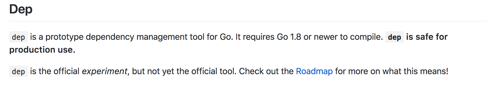
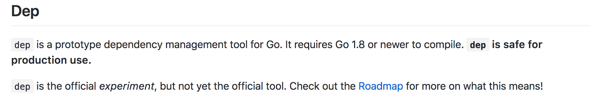
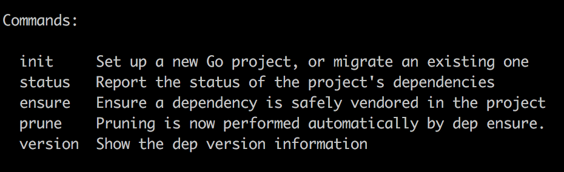
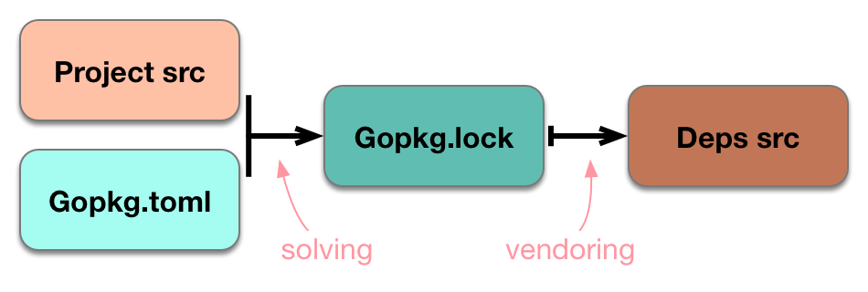

Dependency management in GO
About me
Adam Szecówka
Senior Software Developer @SAP Hybris
adam.szecowka(at)gmail.com
Agenda
- go get
- vendor directory
- dep
The simplest approach: go get
Example
Visit https://github.com/avelino/awesome-go
go get github.com/hackebrot/turtleimport (
"fmt"
"github.com/hackebrot/turtle"
)
func main() {
comp := turtle.Emojis["computer"]
fmt.Println(comp)
}Go get problems
- fetches only from master
- it works on my machine!
- leftpad case
www.theregister.co.uk/2016/03/23/npm_left_pad_chaos/How one developer just broke Node, Babel and thousands of projects in 11 lines of JavaScript
Vendor directory
Go 1.6 includes support for using local copies of external dependencies to satisfy imports of those dependencies, often referred to as vendoring.
Vendor directory
- "vendor" is importable only by code in the directory tree rooted at the parent of "vendor", and only using an import path that omits the prefix up to and including the vendor element.
- Code in vendor directories deeper in the source tree shadows code in higher directories
How to propagate vendor directory?
Dep
 

Dep
Dep Workflow
- dep init - for new project or for migration
- write code, add dependencies
- dep ensure
- goto 2
Supported importers
// BuildAll returns a slice of all the importers.
func BuildAll(logger *log.Logger, verbose bool, sm gps.SourceManager) []Importer {
return []Importer{
glide.NewImporter(logger, verbose, sm),
godep.NewImporter(logger, verbose, sm),
vndr.NewImporter(logger, verbose, sm),
govend.NewImporter(logger, verbose, sm),
gvt.NewImporter(logger, verbose, sm),
govendor.NewImporter(logger, verbose, sm),
glock.NewImporter(logger, verbose, sm),
}
}
Dep ensure meaning
Hey dep, please make sure that my project is in sync: that Gopkg.lock satisfies all the imports in my project, and all the rules in Gopkg.toml, and that vendor/ contains exactly what Gopkg.lock says it should."
Dep ensure
Dep's main command is dep ensure. The verb is "ensure" to imply that the action is not just some single, discrete action (like adding a dependency), but enforcing some kind of broader guarantee.
Dep - under the hood
Gopkg.toml
The Gopkg.toml file is initially generated by dep init, and is primarily hand-edited. It contains several types of rule declarations that govern dep's behavior
Gopkg.lock
- The Gopkg.lock file is generated by dep ensure and dep init. It is the output of the solving function: a transitively complete snapshot of a project's dependency graph.
- Gopkg.lock always includes a revision for all listed dependencies, as the semantics of revision guarantee them to be immutable.
- Gopkg.lock is autogenerated; editing it manually is generally an antipattern.